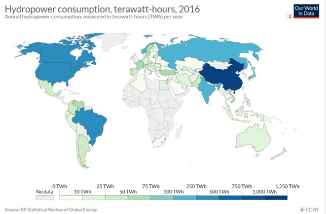

Introduction
By taking advantage of gravity and the water cycle, we have tapped into one of nature's engines to create a useful form of energy. In fact, humans have been capturing the energy of moving water for thousands of years. Today, harnessing the power of moving water to generate electricity, known as hydroelectric power, is the largest source of emissions-free, renewable electricity in the United States and worldwide.
Details
In order to generate electricity from the kinetic energy in moving water, the water has to move with sufficient speed and volume to spin a propeller-like device called a turbine, which in turn rotates a generator to generate electricity. Roughly speaking, one gallon of water per second falling one hundred feet can generate one kilowatt of electricity. To increase the volume of moving water, impoundments or dams are used to collect the water. An opening in the dam uses gravity to drop water down a pipe called a penstock. The moving water causes the turbine to spin, which causes magnets inside a generator to rotate and create electricity.
Downfall
Although the generation of hydropower does not emit air pollution or greenhouse gas emissions, it can have negative environmental and social consequences. Blocking rivers with dams can degrade water quality, damage aquatic and riparian habitat, block migratory fish passage, and displace local communities. The benefits and drawbacks of any proposed hydropower development must be weighed before moving forward with any project. Still, if it's done right, hydropower can be a sustainable and nonpolluting source of electricity that can help decrease our dependence on fossil fuels and reduce the threat of global warming.